JavaWeb学习之路（二）——环境配置与项目创建
学习开发环境
使用IDE : IDEA
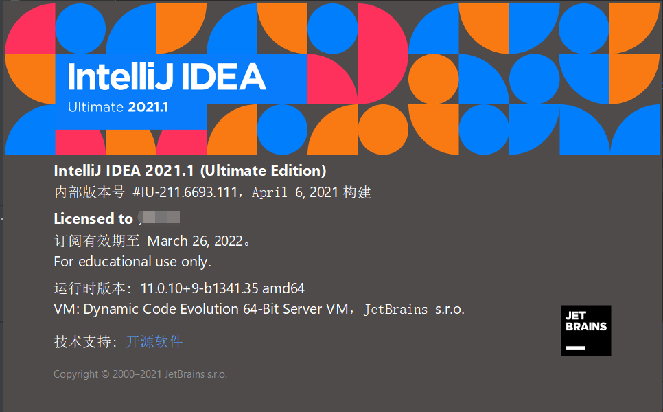
使用学生身份可免费获得许可证
Tomcat 9
Maven 3.8
项目基本环境配置
Java配置
略过。。
Maven配置
- 从官网下载压缩包，并解压到某个文件夹中。创建
maven-repo文件夹作为本地参考存放组件。
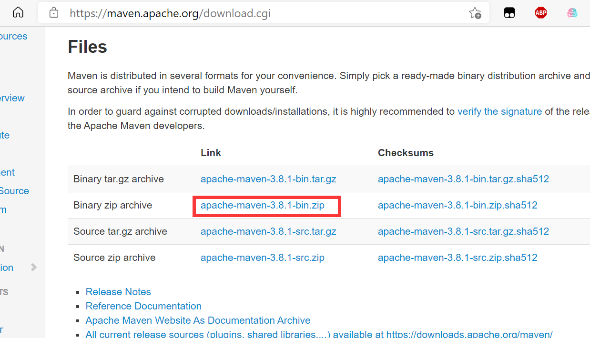
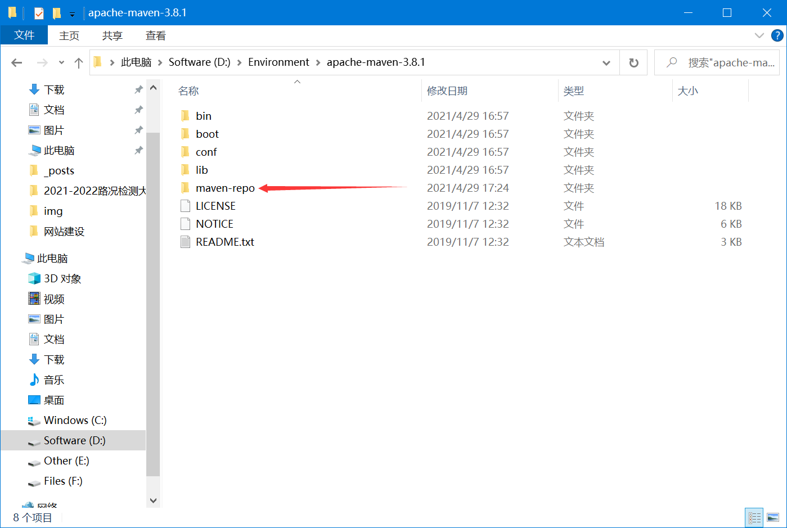
系统环境变量配置
M2_HOME和Path
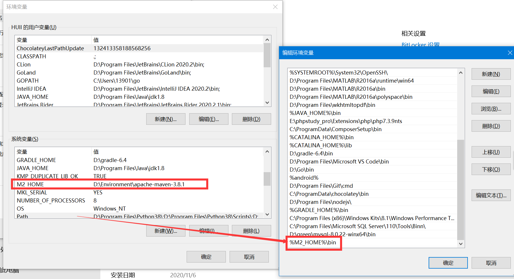
Tomcat配置
下载
建议将conf/logging.properties 下部分编码修改为GBK
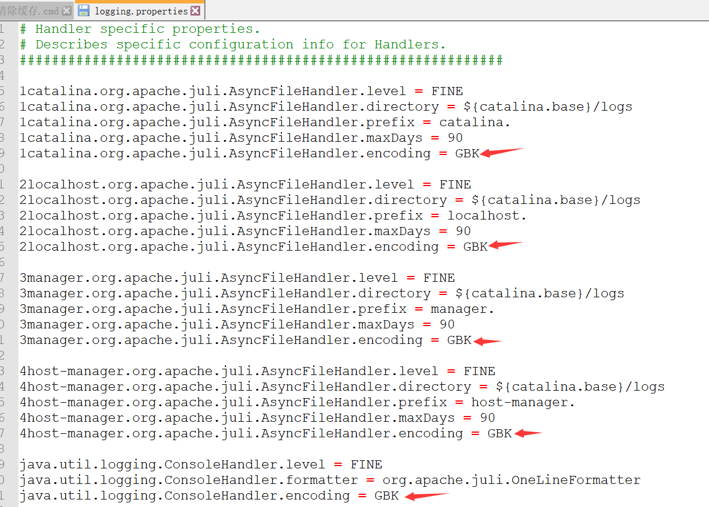
使用IDEA创建项目
- 从原型创建
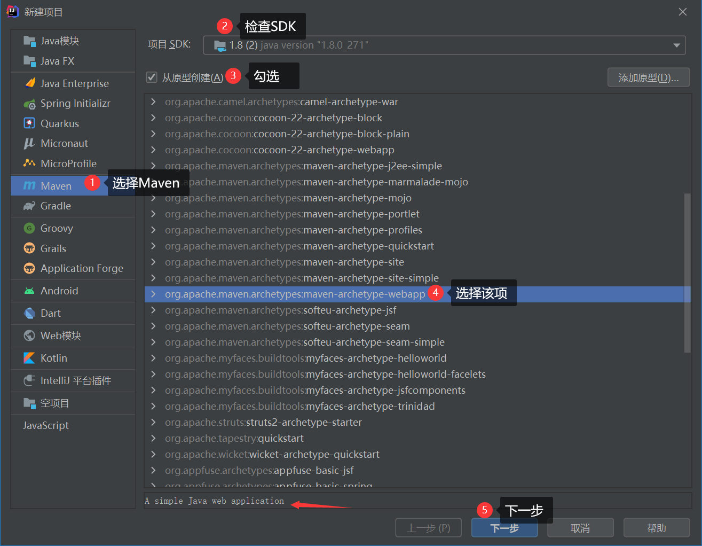
- 配置项目信息
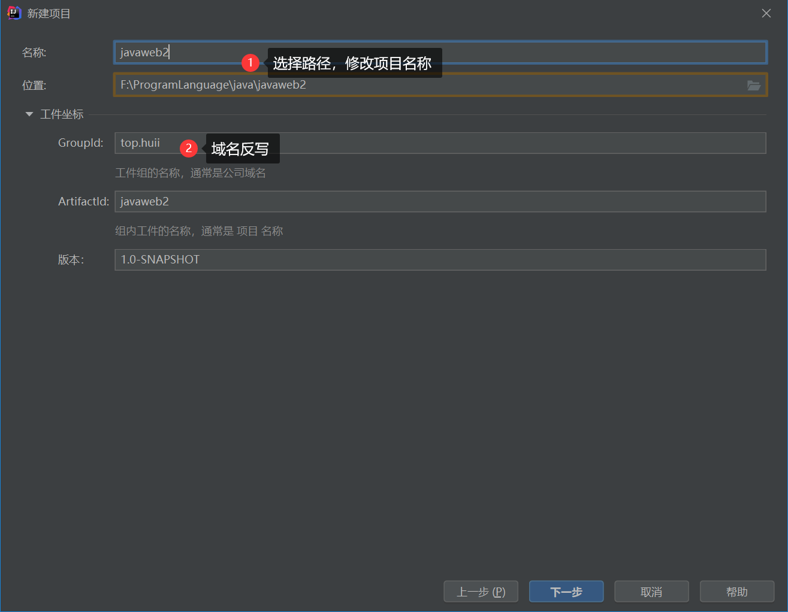
- Maven路径配置
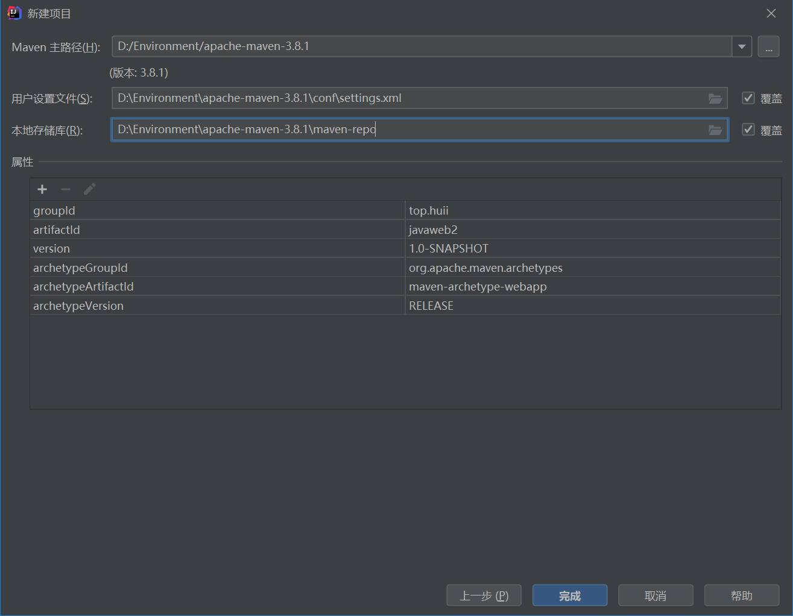
完成
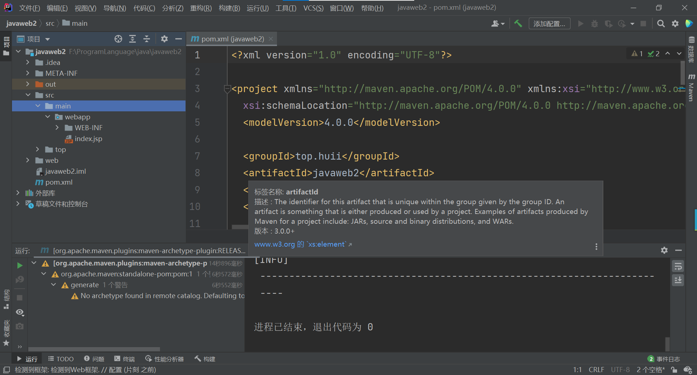
设置Tomcat服务器
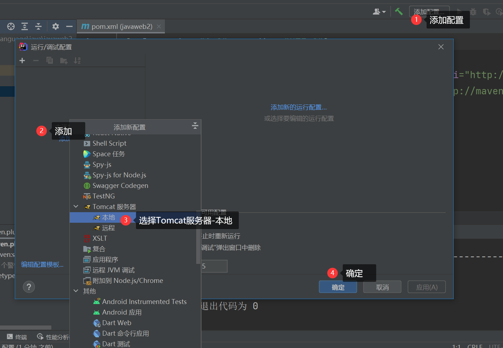

调整至规范目录结构

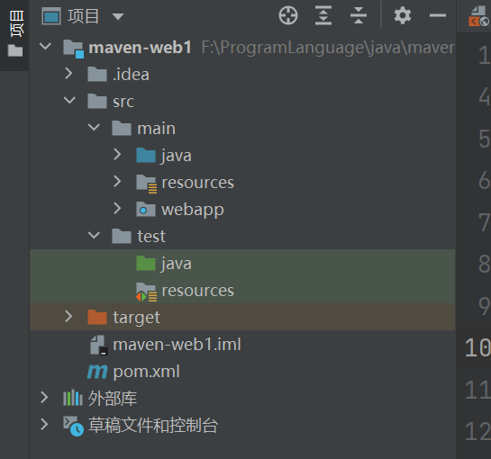
servlet 配置
1
2
3public class Servlet1 extends HttpServlet{
// 输入要继承的内容后，点击提示，选择添加Maven依赖项
}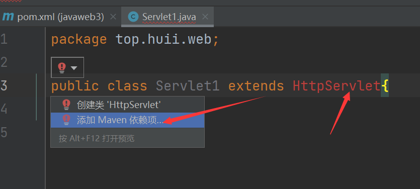
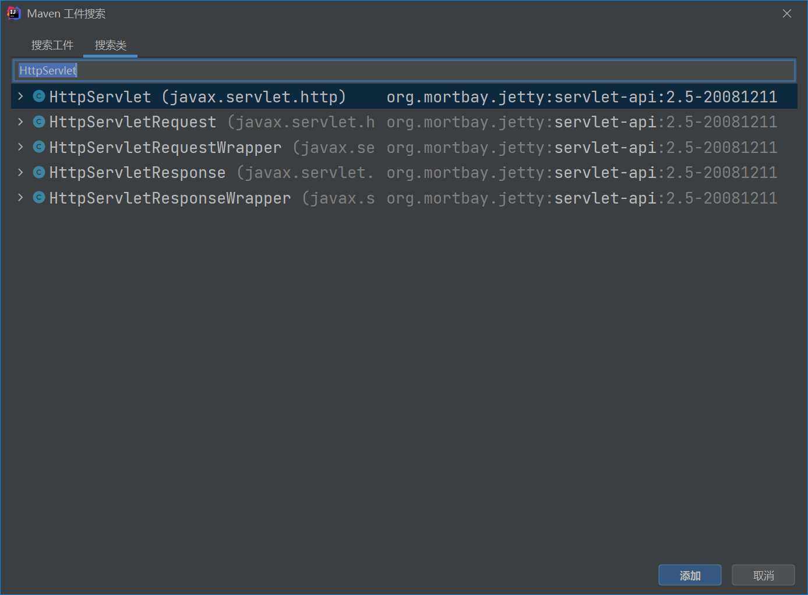
之后新建选择Servlet即可
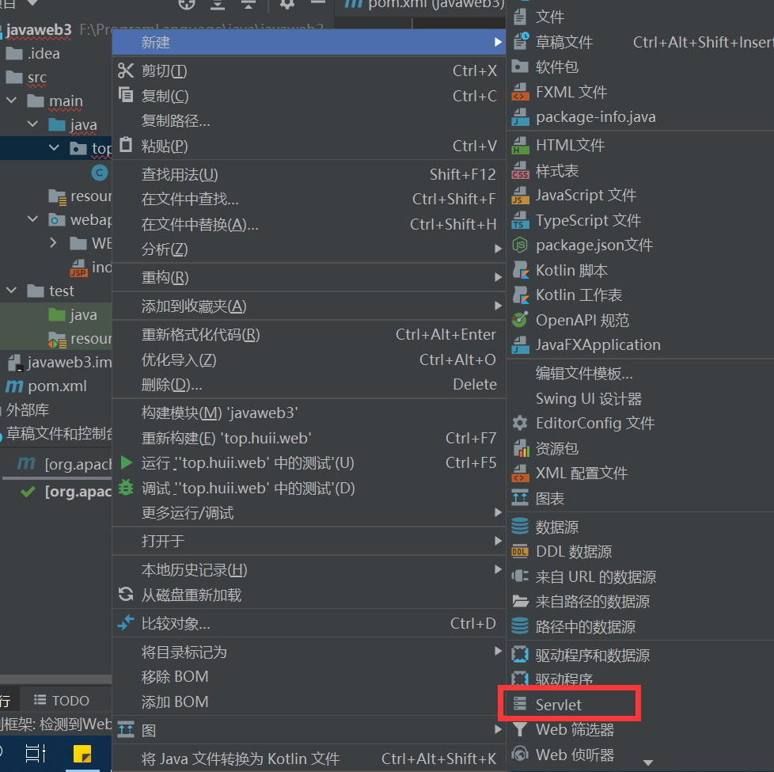
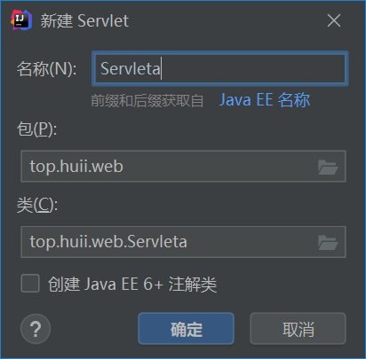
它会帮助我们自动填写
<servlet>标签,我们只要添加<servlet-mapping>标签内容即可。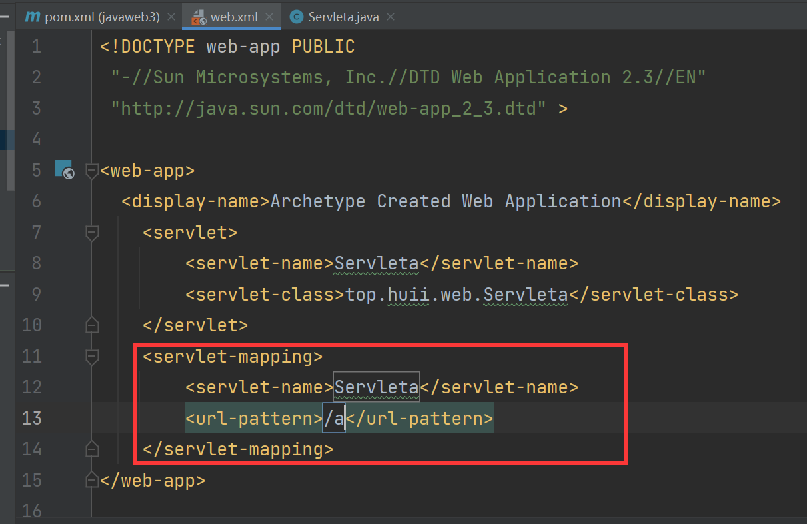
即重写get、post等方法了
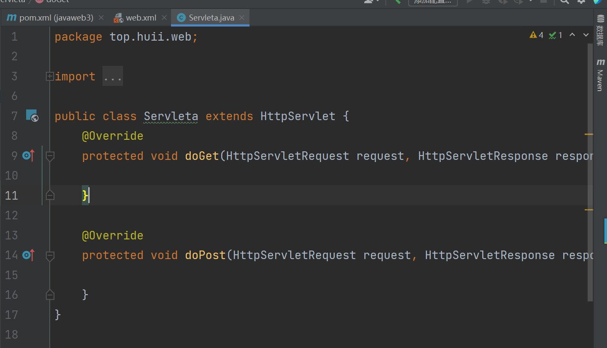
本博客所有文章除特别声明外，均采用 CC BY-NC-SA 4.0 许可协议。转载请注明来自 HUII's Blog！
相关推荐

评论